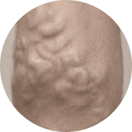
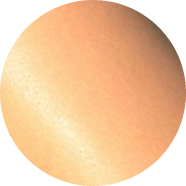
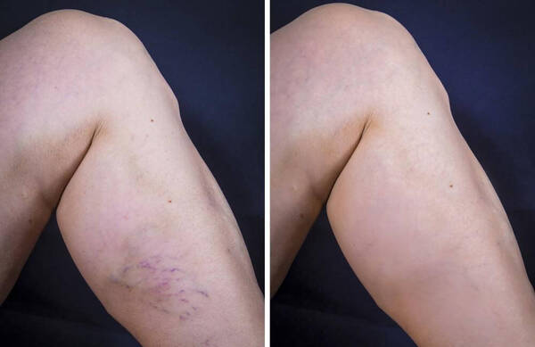
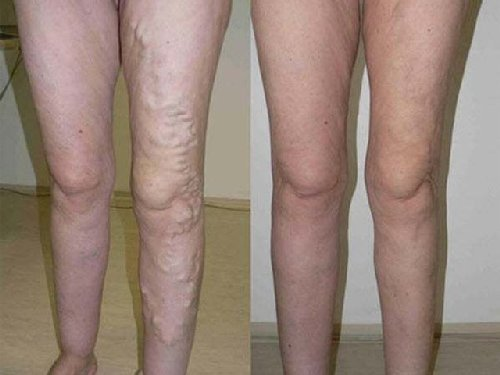
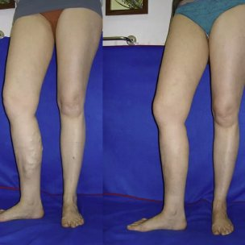

Στο μυαλό μας έχει εγκατασταθεί η άποψη ότι είναι αδύνατο να απαλλαγούμε από κιρσούς
χωρίς τη χειρουργική επέμβαση μέσα σε ένα σύντομο χρονικό διάστημα. Παρά το γεγονός ότι αυτή η θεωρία έγινε
πραγματικά άσχετη στη δεκαετία του 2000, πολλοί εξακολουθούν να πιστεύουν ότι είναι αλήθεια.
Ωστόσο, στην πραγματικότητα, η επιστήμη προχωράει, ειδικά στον τομέα της φλεβολογίας
(μια επιστήμη που μελετά τη δομή, τη λειτουργία και την παθολογία των αιμοφόρων αγγείων). Μία από τις
τελευταίες παγκόσμιες ανακαλύψεις είναι ένα τζελ που βοηθά την εξαφάνιση
των συμπτωμάτων των
κιρσών . Αναγνωρίζεται από τους ειδικούς ως καλύτερο προϊόν που βοηθά στην εξάλειψη των κιρσών. Το
καινοτόμο προϊόν θα βοηθήσει την ομαλοποίηση της κυκλοφορίας του αίματος,
και θα αποτρέψει την
εμφάνιση φλεβών αράχνης. Επίσης προσφέρει αποτελεσματική συνολική ανακούφιση από τα συμπτώματα των κιρσών στην
άνεση του σπιτιού σας μέσα σε 1 μήνα.
Συμπτώματα των κιρσών
Πολύ διεσταλμένα τριχοειδή αγγεία

Πρησμένα και διογκωμένα αιμοφόρα αγγεία
Εξάνθημα
Κνησμός και βάρος στα πόδια
Ιδιότητες του
Βοηθά την ανακούφιση του οιδήματος και του πόνου
Βοηθά τη μείωση της ανώμαλης διαστολής των τριχοειδών
αγγείων
Διεγείρει την κυκλοφορία του αίματος

Λειαίνει και ενυδατώνει την επιδερμίδα
Όταν χρησιμοποιείται τακτικά, το φέρνει τα εξής
αποτελέσματα:
Ανακούφιση τού πόνο και του οιδήματος, αποκατάσταση της φυσική ροής του αίματος.
Μείωση του πόνου και ελαχιστοποίηση του κινδύνου θρόμβωσης.
Βελτίωση της κατάστασης των αιμοφόρων αγγείων, αποκατάσταση της ελαστικοτητάς τους.
Οι συντάκτες του «Hello Health» μίλησαν με ειδικούς που έχουν πολυετή
εμπειρία στον τομέα της φλεβολογίας. Όλοι είπαν το ίδιο πράγμα: συστήνουν ανεπιφύλακτα το στους
ασθενείς τους.
Άντριου Λάρσον, ειδικός στον τομέα της φλεβολογίας (με πάνω από 30 χρόνια
εμπειρίας). Προηγουμένως έιχα κάποιους χειρουργημένους ασθενείς. Αυτό συμβαίνει συνήθως στο τρίτο
ή τέταρτο στάδιο των κιρσών. Ωστόσο, η δημιουργία του τζελ άλλαξε
εντελώς την κατάσταση.
Αυτό το υπέροχο προϊόν μπορεί να βοηθήσει και στα αρχικά στάδια των κιρσών, και σε
σοβαρές περιπτώσεις, όταν φαίνεται αδύνατο να αποφύγουμε τη χειρουργική επέμβαση. Τώρα προτείνω χειρουργική
επέμβαση μόνο σε πολύ δύσκολες περιπτώσεις και σας συμβουλεύω να προσπαθήσετε πρώτα να λύσετε το πρόβλημα με
χρήση αυτού του τζελ.
Το είναι χωρίς αμφιβολία το καλύτερο προϊόν για
την απαλλαγή από τα
συμπτώματα των κιρσών και την πρόληψη της εμφάνισής τους, που μπορείτε να χρησιμοποιείτε με την άνεση του
σπιτιού σας.
Εδώ είναι τα αποτελέσματα πριν και μετά από 1 μήνα χρήσης αυτού του τζελ:
Μόνικα Σίμπσον, ειδικός στην υγεία των αγγείων (πάνω από 11 χρόνια
εμπειρίας). Αναμφίβολα, ένα από τα πλεονεκτήματα του είναι η
σύνθεσή του. Αυτό το
τζελ περιέχει μοναδικά φυσικά συστατικά που βοηθούν αποτελεσματικά στην εξάλειψη της αιτίας των κιρσών.
Επισημάνω ότι, λόγω της μεγάλης ποσότητας φλαβονοειδών, τανινών και βιταμινών που
περιέχει το εκχύλισμα κάστανου, το τζελ βοηθά την τόνωση των τριχοειδών αγγείων και την ομαλοποίηση της
κυκλοφορίας του αίματος.
Το αποτέλεσμα της χρήσης αυτού του τζελ είναι απλά καταπληκτικό. Πιστεύω ότι το
είναι ένα επαναστατικό προϊόν, ένας νέος τρόπος απαλλαγής από κιρσούς, χωρίς
επώδυνες και δαπανηρές
χειρουργικές επεμβάσεις. Αυτό το τζελ μπορεί να χρησιμοποιηθεί σε κάθε ηλικία!

Άλεξ Νάϊκ, κορυφαίος ειδικός στον τομέα της φλεβολογίας (με πάνω από 30 χρόνια
εμπειρίας). Για την ανακούφιση από κιρσούς, συνιστώ ανεπιφύλακτα τη χρήση του .
Αυτό το τζελ μπορεί να αντιμετωπίσει ακόμη και δύσκολες περιπτώσεις, να φέρει ανακούφιση στους ασθενείς με
το τρίτο και τέταρτο στάδιο. Βοηθά την εξάλειψη της αιτίας των κιρσών και όχι μόνο των συμπτωμάτων.
Συνιστώ επίσης τη χρήση αυτού του τζελ για προληπτικούς σκοπούς, προκειμένου να μην
εμφανιστούν οι κιρσοί στο μέλλον.
Στο ιατρείο μου, το βοήθησε σε σοβαρές περιπτώσεις κιρσών
πολλές φορές. Να σας
δώσω ένα παράδειγμα:

Κιρσοί: κίνδυνος σε αριθμούς
Αποτελεσματικότητα του σε αριθμούς
80% των
γυναικών έχουν συμπτώματα χρόνιας φλεβικής ανεπάρκειας
100% δεν
αισθάνονται πόνο ή κόπωση στα πόδια
20% των
ατόμων που πάσχουν από κιρσούς αναγκάζονται να υποβληθούν σε επικίνδυνη επέμβαση
97%
παρατήρησαν την εξαφάνιση των φλεβών αράχνης.
65% έχουν
αυξημένο κίνδυνο εμφάνισης κιρσών, ειδικά εάν υπάρχει οικογενειακό ιστορικό
96%
ομαλοποιείται η λειτουργία του κυκλοφορικού συστήματος.
70% των
'εγκυων γυναικών πάσχουν από κιρσούς
100% δεν
παρατήρησαν καμία παρενέργεια.
90% των
γυναικών που φορούν τακούνια πάνω από 8 εκατοστά υποφέρουν από τον πόνο στα πόδια τουλάχιστον μία φορά
την εβδομάδα
95%
εξαφανίστηκαν οι προεξέχουσες και φλεγμονώδεις φλέβες.
100% αποτελεσματικό προϊόν
Το τζελ είναι πιστοποιημένο στην ΕΕ και εγκεκριμένο για χρήση στην Ευρώπη. Θα
δείτε τη βελτίωση μετά από 1 μήνα χρήσης του ! Αξίζει να το δοκιμάσετε!
Φώτιος, 45 ετών
Τα πόδια μου είχαν μπλε χρώμα, οι φλέβες πρήστηκαν. Σταμάτησα να κάνω βάρη,
αλλά το πρόβλημα παρέμεινε. Μου είπαν ότι μόνο η χειρουργική επέμβαση θα βοηθούσε. Όμως το τζελ
έλυσε αυτό το πρόβλημα μέσα σε ένα μήνα! Τα πόδια μου έχουν ξάνα ένα φυσιολογικό χρώμα.
Αριστέα, 35 ετών
Εφαρμόζω τακτικά το τζελ το βράδυ μετά τη
δουλειά. Ανακουφίζει
γρήγορα το πρήξιμο και την κούραση, ενώ η εφίδρωση των ποδιών έχει επίσης μειωθεί σημαντικά. Το πρωί
νιώθω ότι τα πόδια μου είναι σαν καινούργια. Το συνιστώ σε όλους!

Σπυριδούλα, 35 χρονών
Το τζελ είναι ένα πραγματικό σωτήριο για μένα. Το εφαρμόζω
καθημερινά. Μόλις μερικές εβδομάδες μετά την έναρξη της χρήσης του, παρατήρησα μια σημαντική μείωση στα
προεξέχοντα αγγεία. Τα πόδια μου φαίνονται καλύτερα, νιώθω ελαφρότητα και είμαι γεμάτη ενέργεια ακόμα
και τα βράδια
Κωνσταντίνα, 38 ετών
Είχα πολλές προεξέχουσες φλέβες στα πόδια μου. Στο ιατρείο μου είπαν ότι
μπορούν να αφαιρεθούν μόνο χειρουργικά. Απέφευγα όμως την επέμβαση. Δεν ήθελα να έχω σημάδια στα πόδια
μου. Αποφάσισα να δοκιμάσω το τζελ . Μετά από 3 εβδομάδες χρήσης ο πόνος και το οίδημα στα πόδια
εξαφανίστηκαν. Μια εβδομάδα αργότερα, οι πρησμένες φλέβες εξαφανίστηκαν σχεδόν εντελώς.
Μαργαρίτα, 41 ετών
Για πολλά χρόνια υπέφερα από κιρσούς κάτω από τα γόνατά μου. Οι φλέβες εκεί
συνεχώς προκαλούσαν φαγούρα, μερικές φορές πονούσαν. Πέρυσι, παρατήρησα ότι οι φλέβες άρχισαν να
διογκώνονται. Τότε αποφάσισα ότι κάτι έπρεπε να γίνει. Πήγα σε έναν ειδικό και με συμβούλεψε να δοκιμάσω
το . Ήταν απίστευτο, αλλά είδα διαφορά την πρώτη κιόλας εβδομάδα χρήσης αυτού του τζελ. Η
φαγούρα και ο πόνος εξαφανίστηκαν σχεδόν αμέσως. Και μετά από 2 εβδομάδες, παρατήρησα ότι οι φλέβες κάτω
από τα γόνατα σχεδόν ξεφούσκωσαν.
Άννα, 36 ετών
Έπαθα κιρσούς μετά την εγκυμοσύνη. Η κρέμα που μου συνέστησαν στο φαρμακείο
μου έφερε μόνο προσωρινό αποτέλεσμα. Οι κάλτσες συμπίεσης ήταν πολύ σφιχτές, ήταν αδύνατο να περπατήσω
με αυτές. Για να είμαι ειλικρινής, κόντεψα να τα παρατήσω τότε και σχεδόν αποφάσισα να κάνω την
επέμβαση, αλλά τυχαία διάβασα για το και το αγόρασα. Εντυπωσιάστηκα το
αποτέλεσμα: οι φλεβικοί
κόμβοι στα πόδια σχεδόν εξαφανίστηκαν. Τώρα τα πόδια μου είναι όμορφα όσο πριν! Μπορώ να φορέσω ξανά
κοντές φούστες!
Παναγιώτα, 67 ετών
Έχω κληρονομήσει τους κιρσούς. Με βασανίζουν όλη μου τη ζωή. Στα νιάτα του,
δεν με ενοχλούσαν πολύ, αλλά με την ηλικία έγιναν πολύ άσχημα: οι φλέβες καίνε, ειδικά αν είμαι στα
πόδια όλη μέρα ή κουβαλάω βαριές τσάντες. Η κόρη μου πρόσφατα αγόρασε το
και αυτό το τζελ με
έχει σώσει! Ποτέ δεν πίστευα ότι θα μπορούσα να απαλλαγώ από ένα πρόβλημα που με βασάνιζε σε όλη μου τη
ζωή τόσο γρήγορα. Χρησιμοποιώ αυτό το τζελ τους τελευταίους 6 μήνες και έχω ξεχάσει τα προβλήματα με τις
φλέβες μου.
ΣΥΧΝΕΣ ΕΡΩΤΗΣΕΙΣ
Ποιες είναι οι πιθανές παρενέργειες; +
Το τζελ περιέχει φυσικά συστατικά, δεν περιέχει παραβένες,
βαφές, συνθετικά αρώματα και μεταλλαγμένα προϊόντα. Το προϊόν έχει πιστοποιηθεί και δεν έχει
αντενδείξεις. Δεν προκαλεί αλλεργίες και παρενέργειες.
Πόσο καιρό πρέπει να χρησιμοποιείται; +
Η διάρκεια της θεραπείας εξαρτάται από το στάδιο των κιρσών. Συνήθως,
μετά από 1,5-2 εβδομάδες, τα πρώτα αποτελέσματα της χρήσης του τζελ είναι ήδη φανερά.
Πού μπορώ να το αγοράσω;+
Η εταιρεία μας είναι ο μόνος επίσημος προμηθευτής του στην ΕΕ.
Οι παραγγελίες μπορούν να γίνουν μέσω αυτής της ιστοσελίδας. Αγοράστε μόνο το γνήσιο προϊόν !